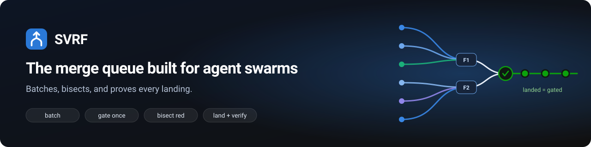
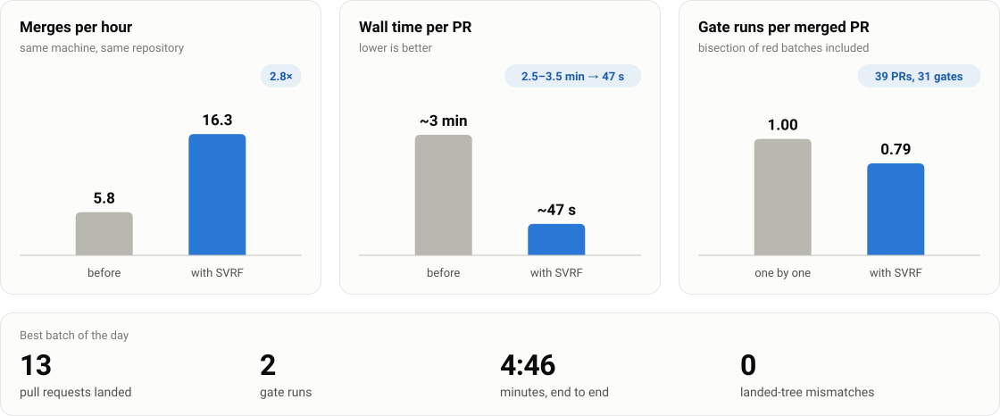
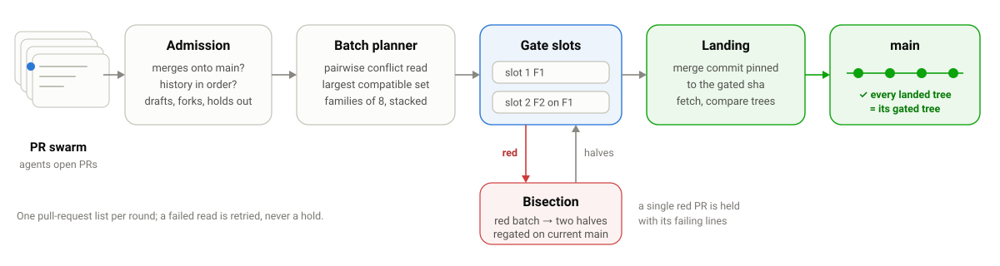

SVRF is a merge queue for repositories where AI coding agents — Claude Code, Codex and similar swarms — open pull requests faster than CI can gate them one by one. It watches a GitHub repository, folds compatible ready pull requests into a merge train, runs your gate command once per batch, bisects a red batch down to the pull request that broke it, and lands the rest with ordinary merge commits — checking after every merge that the base branch holds exactly the tree that was gated.
Measured on a 17,000-declaration Lean 4 monorepo fed by a swarm of coding agents opening pull requests, on a self-hosted runner. All figures are from that day's real run receipts — see docs/BENCHMARK.md for the full numbers and caveats.

Admission, conflict-aware batching, one gate run per family, bisection of anything red, and a landing step that checks the base only ever holds a tree that was actually gated.

Works as a GitHub Action, a CLI, or a container — no dependencies beyond git and the gh CLI.
No local install, no svrf.toml: on its first run it detects your project and gate command.
# .github/workflows/svrf.yml
name: svrf
on:
schedule: [{cron: "*/5 * * * *"}]
pull_request: {types: [ready_for_review]}
jobs:
round:
runs-on: ubuntu-latest
steps:
- uses: actions/checkout@v4
- uses: nybarius/SVRF@v0.1.0
with:
github-token: ${{ secrets.SVRF_TOKEN }}The Action needs nothing further. The CLI writes svrf.toml by detection and checks token scopes, branch protection and the gate command.
svrf init
svrf doctorOne round, or keep it going as a timer, a systemd service, or a container.
svrf run --once # or: svrf watchI set SVRF up on your repository and leave it running:
Typical delivery is one week from access. Larger estates (monorepos, many repositories, air-gapped runners) and ongoing support are quoted separately.
Or write to nybarius@gmail.com with your repository, gate command and runner setup. Replies are private; nothing goes on the issue tracker.